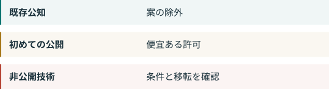

04. 中国の公開モデルの将来¶
公開には複数の意味がある¶

ダウンロードできる重み、開かれたライセンス、再現に足りる学習情報は別の性質です。OSIの定義は使用、研究、変更、共有の自由とデータ情報、コード、パラメーターを求めます。中国法上の判定基準とは別です。OSI
DeepSeek R1はコードと重みのMIT許諾を記し、蒸留版の由来も区別します。Qwen3は公開モデルとApache 2.0を記します。既存公開の具体例であり、各社全モデルや将来版の保証ではありません。R1 QWEN
注1は既に公知の技術を除外し、注2は制限技術の新しい公開輸出を容易にします。論文を出しても私有の重みや学習コードが公開されるとは限りません。実際のファイル、限定ダウンロード、後の私有改良を個別に見ます。公告はすべての境界例に答えていません。CN-A1 CNQA
予測ではない四つの可能性¶
公開継続。 明示された便宜がこの可能性を支えます。将来の縮小や確認された遅延は反対の証拠になります。CN-A1
公開前の準備増加。 データ、指標、公開内容の記録が増えるかもしれません。私たちの推論であり、遅延の実証ではありません。CN-A1
製品の分化。 一つを公開し、高度版や特殊データを非公開にする選択もあり得ます。公告の義務ではありません。CN-A1
遠隔サービスの増加。 公式の区別から合理的な可能性ですが、料金、継続、プライバシー、他の禁止からの自由は保証しません。CNQA
最終目録、公知の定義、自動許可の運用、新チェックポイント、米国の半導体規則を観察します。中国の公開モデルが終わる日を示す根拠も確率も本書にはありません。版、ライセンス、取得日、改変の記録は私たちの提案で、追加の法的義務ではありません。CN-A1 EAR742 EAR744